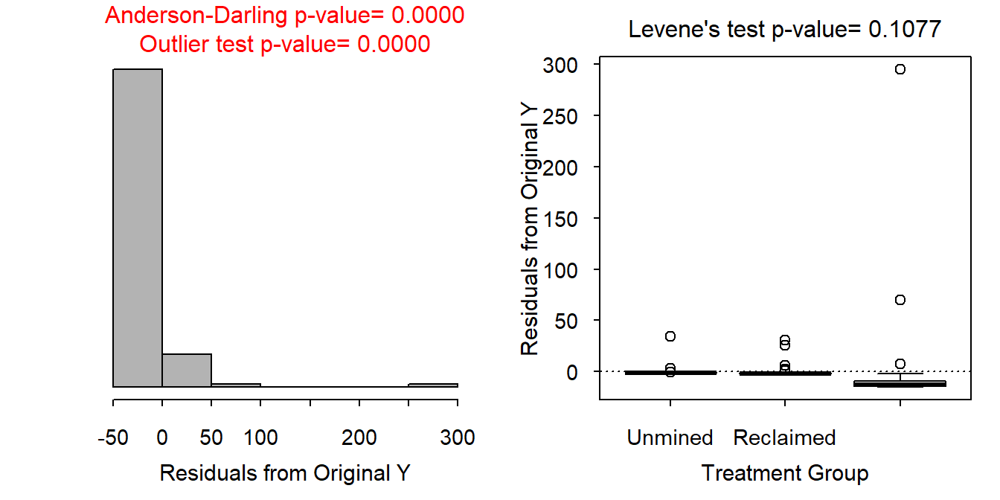
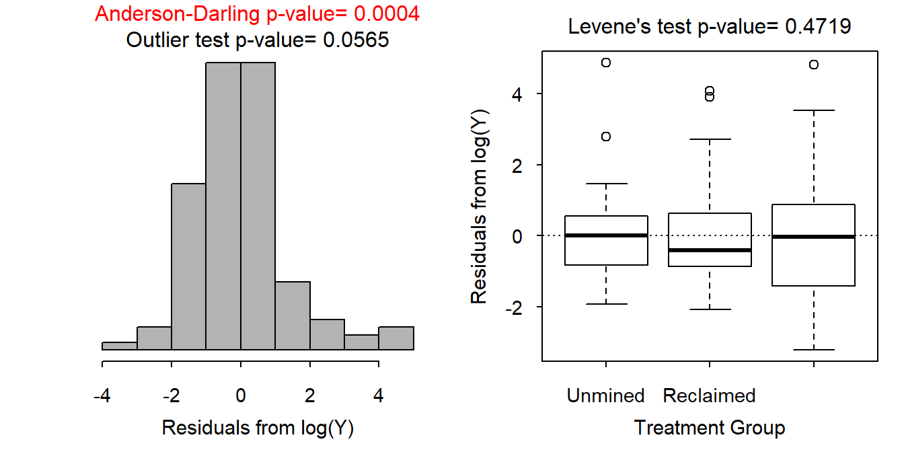
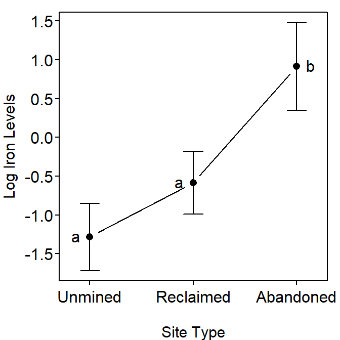

Iron and Mining
- The individuals are likely independent but this is not abundantly clear. The measurements are from 120 unique rivers, so there is not multiple measurements on the same river. However, some of the rivers are likely in the same watershed and would share characteristics (e.g., geogological, other land use, etc.) based on that. The data are likely independent enough for our purposes. The variances appear to be equal (Levene’s test p=0.1077), though the residual plot suggests several outliers (Figure 1-Right). The residuals are not normal (Anderson-Darling p<0.00005) and appear strongly right-skewed (Figure 1-Left). Finally, there is evidence for significant outliers (outlier test p<0.00005). Thus, the assumptions for a one-way ANOVA have NOT been met.
- The iron levels were transformed to the (natural) log scale. On this scale, the variances appear to be equal (Levene’s p=0.4719), the residuals appear to not be normal (Anderson-Darling p=0.0004) but an examination of the histogram of residuals is not strongly skewed (Figure 2)), and no significant outliers are present (p<0.00005). Thus, the assumptions are adequately met on this scale; these data will be analyzed on the log scale.
- The mean log iron level differs among the three mine types (p<0.00005; Table 1).
- It appears that mean log iron level for the abandoned mines is significantly greater than that for the unmined (p<0.00005) and reclaimed mines (p<0.00005), but the mean log iron level does not differ (at the 5% level) between the unmined and reclaimed mines sites (p=0.0693; Table 2). These results are shown in Figure 3.
- The mean iron level for abandoned mines sites is between 4.0 and 20.2 times greater than the mean iron levels for the unmined sites (Table 3).
- It appears that iron levels are much higher in streams with abandoned mine sites than at either the unmined or reclaimed sites (Figure 2), which suggests that mining is contributing to increased levels of iron. Iron levels did not differ between unmined and reclaimed sites (Figure 2), which suggests that reclaiming a mining site can return iron levels to the same levels as those for unmined sites.

Figure 1: Histogram of residuals (left) and boxplot of residuals by mine site type (right).

Figure 2: Histogram of residuals (left) and boxplot of residuals by mine site type type (right) for log-transformed iron levels.
Table 1: Analysis of variance table for the natural log of iron levels by mine type.
Df Sum Sq Mean Sq F value Pr(>F)
use 2 90.091 45.045 21.743 9.35e-09
Residuals 117 242.392 2.072
Table 2: Tukey’s multiple comparison results for mean log iron levels by mine site type.
Estimate Std. Error t value p value
Reclaimed - Unmined = 0 0.6987774 0.3125378 2.235817 6.932868e-02
Abandoned - Unmined = 0 2.1989605 0.3397823 6.471674 4.425062e-09
Abandoned - Reclaimed = 0 1.5001831 0.3226359 4.649772 2.829629e-05

Figure 3: Plot of mean (with 95% CI) log-transformed iron levels in streams by mine site type. Different letters indicate means that are significantly different.
Table 3: Back-transformed Tukey’s confidence interval results for the ratio of mean iron levels between pairs of mine site types.
Estimate lwr upr
Reclaimed - Unmined 2.011292 0.9579213 4.222994
Abandoned - Unmined 9.015637 4.0250297 20.194064
Abandoned - Reclaimed 4.482510 2.0843348 9.639955
R Appendix.
library(multcomp)
d <- read.csv("AcidMineDrainage.csv")
d$use <- factor(d$use,levels=c("Unmined","Reclaimed","Abandoned"))
lm1 <- lm(FE~use,data=d)
transChooser(lm1)
d$logFE <- log(d$FE)
lm2 <- lm(logFE~use,data=d)
anova(lm2)
mc2 <- glht(lm2,mcp(use="Tukey"))
summary(mc2)
fitPlot(lm2,xlab="Mine Site Type",ylab="Log Iron Level")
addSigLetters(lm2,c("a","a","b"),pos=c(2,2,4))
exp(confint(mc2)$confint)